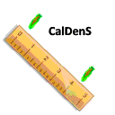

CalDenS es una aplicaccion desarrollada por Juan Eduardo Riva y tiene como objetivo facilitar el analisis de situaciones "a campo" referentes a densidades de siembra en distintos cultivos.
La aplicación esta pensada para trabajar a campo por esto no necesita de conexion a internet, permite la modificacion de valores al vuelo para poder analizar las opciones de forma mas rapida y toma en cuenta tambien la comunicación a terceros y trata de ser clara, comprensible y literal cuando entrega a información.
En su menu principal deberá aparecer el icono de nuestra aplicación. Haga click sobre el mismo.

Usted vera la pantalla de inicio de CalDenS, 4 segundos despues usted sera direccionado a la pantalla de selección de idioma.
Seleccione el idioma con el que se sienta mas comodo. Es importante que entienda que para facilitar el trabajo se toma como universal que el español Latinoamericano y portugues Latinoamericano utilizan el sistema metrico y que el español EEUU y el ingles EEUU utilizan el sistema en pulgadas.